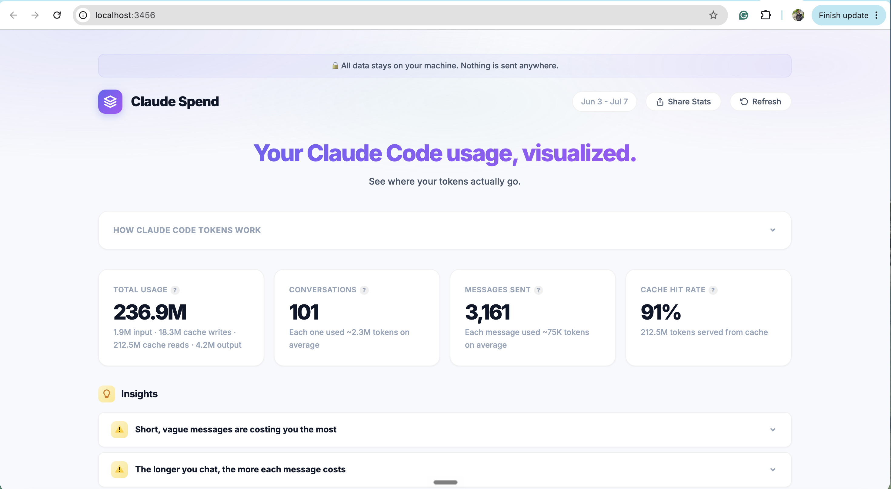

Questions?
If you want to connect, I'm right here.
Scan the code and say hi on LinkedIn.
Three features that make Claude Code work the way you do.
Since Nov 2025 I've built 10+ products with Claude Code. These two are the biggest.

Open-source Claude Code usage tracker. Went viral on LinkedIn and Reddit. 700+ users, 494 GitHub stars.
Marketing site for a B2B SaaS startup whose founder raised €1M. Designed and built end to end.
One file that tells Claude who you are.
Watch for three things: it's short, every line is a fact about me, and it tells Claude how I like to work.
# Who I am - your role and team - the company, and what you own - "keep it plain" if that's you # What I work on - your product, in one line - who its users are - who you work with
# How I write - your tone for docs - the format you like - words you never want to see # How to work with me - give me options, not essays - ask what's missing first - push back when I'm wrong
The file that gets a repeated task done your way.
Watch for three things: it does one job, the description says when to use it, and every step is checkable.
One sentence to Claude, and it writes the skill for me. I'll build a "write my weekly report" skill that turns rough notes into an organized report.
name: one or two words, e.g. "prd" description: what it does, in one line. Then "Use when..." in the words you'd actually say # Steps 1. the steps in order, each one checkable 2. "start with a summary" beats "make it engaging" 3. end with what the finished output looks like
* the must-haves, the rest is optional
A skill is any task you do the same way every week. A few, by job:
Tip: let Claude write it for you. Ask, "What do I keep repeating?" Pick the ones you do the same way each time, then tell Claude, "please turn them into skills."
The check that runs on its own, every single time.
Watch for three things: it runs on every prompt I send, the script is dead simple, and I gave myself a way past it.
Hooks… ensure certain actions always happen.Claude Code hooks documentation
Same idea, for a hook. I'll build one that blocks any prompt with an email or phone number, the personal data you should never paste into AI, then watch it stop me in real time.
When: the moment it fires Then: what happens
A hook is one dumb check on the mistake you can't afford. A few, by job:
If you want to connect, I'm right here.
Scan the code and say hi on LinkedIn.